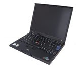
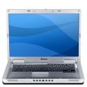

Nemám, nemám a nemám. Fuj. Strčte si všechny svoje myši někam do terária a nikdy mi je už neukazujte. Je to stvoření zbytečné, ničící zdraví. A co se má dělat se zbytečnými existencemi? Vyhodit je, popřípadě jinak zaručit, abychom je nevlastnili či se s nimi nestýkali (třeba si je nikdy nepořizovat).
Nemám, nemám a nemám. Fuj. Strčte si všechny svoje myši někam do terária a nikdy mi je už neukazujte. Je to stvoření zbytečné, ničící zdraví. A co se má dělat se zbytečnými existencemi? Vyhodit je, popřípadě jinak zaručit, abychom je nevlastnili či se s nimi nestýkali (třeba si je nikdy nepořizovat).
Филипика proti myším
Myš je zlo. Máte ji u sebe a stále na ni musíte sahat. Je taková kulatá a dobře se drží. Roztomilá… Jenže ta cena za sáhnutí! Časová ztráta přesunu ruky na myš a zpět je nehorázná, když se sečte. Myš práci zpomaluje. To, co byste běžně udělali manuálně na pár klepnutí prsty, uděláte s roztomilou myší o dost pomaleji.
Prodejnost notebooků u nás již několik let převyšuje tutéž veličinu měřenou pro stolní počítače a stále běžnější je, že (hlavně díky roztomile levným ejsrům papírové konstrukce a příšerného rozložení šasi) přenosný stroj vlastní kdejaká kamarádka z humanitního oboru válející si šunky v Portugalsku. Nebude tedy od věci, když zde opomenu klasické stolaře a zaměřím se na komunitu milášššků z brašen na rameno či batůžků. Majitelé laptopů, vzpamatujte se! Myš stojí peníze navíc. Je to závaží. Překáží. Zvyšuje počet kabelů jdoucích z přenosného zařízení jménem notebook.
Kuličková se zanáší a nefunguje, optická nepříjemně svítí, což rozptyluje (taky si pořád hrajete s tím světýlkem? :D). Znám myši, které dokážou zapojené osvětlit v běžné schoulené poloze na stole celý pokoj ve tmě. Skvěle se při tom spí. Ale co víc! Myš je zdraví škodlivá! Zjistili jste někdy, v případě že jako člověk v IT či jiném opočítačeném oboru sedíte u své mašinky celý den, pozorujete na zápěstí své ruky omyšininy? Nekupujte si gelovou podložku (další peníze!) a nepřeučujte se na levou. Zbavte se příčiny zahozením hlodavce.
Dzindzik
Když jsem dostal po legendárním Joshuovi svůj druhý notebook, tentokrát jako firemní a také už jako pořádnější dělíčko od chlapců z IBM, neměl myš. Řekl jsem si, že si ji časem koupím a zatím jej zkusím ovládat přes ten podivný dzindzik v klávesnici – můj typ neměl ani touchpad. Ta zvláštnost se jmenuje trackpoint, ale myslím že každý na něj volá, jak je mu libo. Věc je to svým tvarem k fantazii vlídná a ať už myslíte zrovna na cokoliv, stejně vás mezi prvními alternativními názvy napadne klitoris :D .
Lenost zajít koupit myš mě naučila s trackpointem. Nejdříve jsem se nestrefil ani do tlačítka oukej, ale po dni a půl jsem již křižoval displej líp něž Římané své nepřátele. Jak to bylo jednoduché :) . Exotické, ale návykové. Kupovat myš? Bleee… Dělal jsem s trackpointem veškerou práci, pixelovou grafiku a odehrál i velkou část Dungeon Siege.
Ťap ťap
Ale nic netrvá věčně a ani jiskra mezi mnou a klit… dzindzikem neodolala všem vnějším vlivům. Ono už se to tak stává, že zrovna notebook, který si vyberete pro začátek svého podnikání, čudlíkem nedisponuje. Sice trochu naštve, že prakticky skoro všechny ostatní Delly ho mají, ale co už – pořád s tím nic nenaděláte :) . Můj Dell má touchpad, dotykovou plošku. A řeknu vám, je to asi ještě lepší vynález. Můžete s ním dělat hotová kouzla – scrollovat nahoru, dolů, doleva, doprava, používat drag&drop jedním prstem, namapovat si speciální místa (třeba pravý horní roh jako prostřední tlačítko)… Sakryš, teď se mi rozlomilo jabko v ruce a spadlo mi do klávesnice… Mmmhhmm… Momentík :D .
Kde jsem to byl? Jistě, rozplýval jsem se nad touchpadem. Ano, tahle ploška má neskutečný potenciál, dodává se rovnou v notebooku (nemusíte ji nosit zvlášť, někam zapojovat, není to žádný drát navíc do vašeho PC, nestane se vám, že máte krátkou šňůru nebo vybité baterky, …), nijak nesvítí, neotravuje, když si jej zaprasíte špínou, tak jej prostě utřete. Spousta lidí jej vypíná nebo nepoužívá dle mého názoru jen proto, že s ním neumí a nechápou jeho efektivitu. Neomyšíte si zápěstí, nikam nejezdíte s rukou a když jedete do světa autobusem, můžete pracovat stejně komfortně jako na stole ;) .
Hm?
Proto… Dejte šanci alternativám! Zkuste na pár dní zahodit myš a zvykněte si na touchpad – budete odměněni obrovskou svobodou. Ano, pokud hrajete střílečky nebo vlastníte stolní počítač, pak asi nemáte šanci a je to škoda, ale popravdě – pokud se řadíte mezi zdravé lidi a tudíž hry nehrajete stále, můžete si myšku zapojovat jen na hraní – stejně jako volant nebo jinou speciální periferii ;) .
 Kindle
Kindle